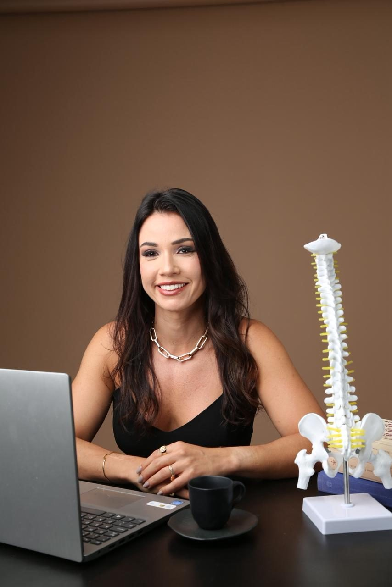
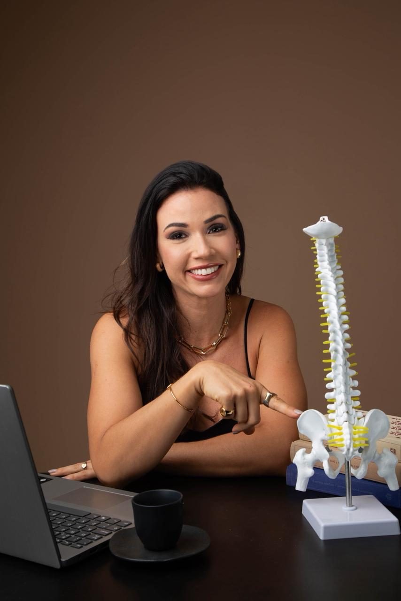

Quiropraxia · Barra da Tijuca
Dor lombar, cervical ou ciática atrapalhando seu dia a dia?
Cuide da sua coluna com quiropraxia especializada, em um atendimento que une técnica e acolhimento — na Barra da Tijuca.

Sinais comuns
Você sente isso?
Dor lombar / coluna
Aquela dor que trava as costas e dificulta até levantar da cama.
Dor cervical / torcicolo
Tensão no pescoço que vira dor de cabeça e incomoda o dia inteiro.
Dor ciática / irradiada
Dor que sai da lombar e desce pela perna, incomodando ao sentar ou caminhar.
Postura e home office
Horas sentado(a) cobrando um preço: ombros tensos, coluna desalinhada, cansaço constante.

O método
Como funciona a quiropraxia
-
Avaliação
Giselle analisa sua postura, histórico e queixas para entender a origem da dor.
-
Plano de tratamento
Um plano de ajustes pensado para o seu corpo e sua rotina, não um protocolo genérico.
-
Ajustes e acompanhamento
Sessões de quiropraxia com acompanhamento da evolução a cada etapa.
Por que a Giselle
Diferenciais
- Ambiente moderno e seguro no O2 Corporate & Offices, na Barra da Tijuca.
- Atendimento individualizado — sem pressa, sem protocolo padronizado.
- Uma abordagem que une técnica e acolhimento em cada sessão.
Quem cuida de você
Sobre a Giselle
Fisioterapeuta formada pela Universidade Veiga de Almeida, Giselle Guimarães é especialista em quiropraxia e Pilates. Atende na Barra da Tijuca com um método que combina rigor técnico e um cuidado próximo com cada paciente — "movimento com técnica e acolhimento", como ela mesma resume seu trabalho.
Quem já passou por aqui
Depoimentos
Dúvidas comuns
Perguntas frequentes
Os ajustes são feitos com técnica específica para o seu corpo, respeitando seu limite. Cada pessoa reage de um jeito, e a Giselle ajusta a abordagem conforme sua resposta ao tratamento.
Varia de pessoa para pessoa. Depois da avaliação inicial, Giselle monta um plano com a frequência ideal para o seu caso.
O atendimento é particular. Fale pelo WhatsApp para saber mais sobre como funciona.
Consultório
Onde fica o consultório
O2 Corporate & Offices — Av. José Silva de Azevedo Neto, 200, BL 06 Sala 414, Barra da Tijuca, Rio de Janeiro - RJ